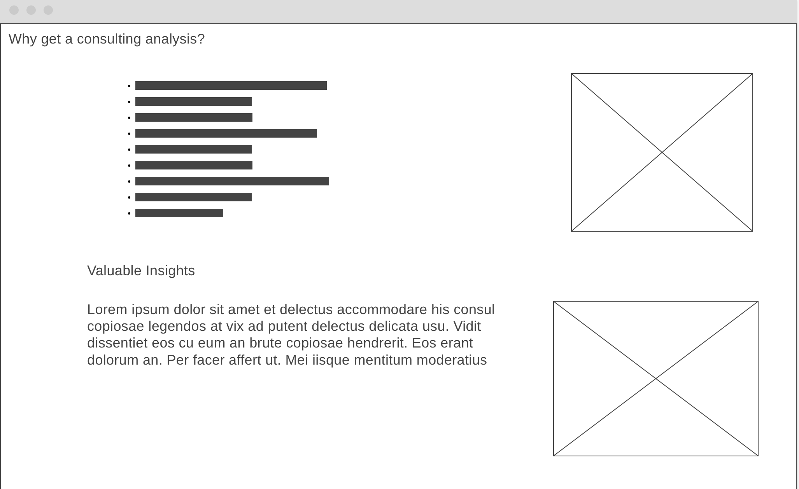

- Data Scientist
- Programmer
- Data Analyst
- Statistician
with a passion for providing valuable consulting project and analyses!
I'm currently studying at Brigham Young University - Idaho
Learn more about my previoius analyses!
About me
Hello again! Thanks for scrolling this far!! Currently, I'm studying Data Science at Brigham Young University-Idaho . I am also striving for a minor in computer science and certificate in machine learning fundamentals.
Acquired Skills


What is a Consulting Analysis?
A consulting analysis refers to the process of evaluating a company's operations, strategies, or specific challenges to provide valuable advice and recommendations for improvement. It is a strong and valuable aspect for business, where consultants and analysts leverage their analytical skills to assess different aspects of an organization and key components.
The consulting analysis typically involves the following steps:
- Problem Identification: The analyst works closely with the client to understand their needs, challenges, and objectives. This involves gathering relevant data and conducting interviews for those whom the analysis will benefit.
- Data Collection and Analysis: The analyst collects both quantitative and qualitative data related to the problem at hand. This may include (but is not limited to) financial records, customer feedback, and/or internal documentation. This data is then analyzed using various analytical techniques to identify patterns and trends, thus finding areas for improvement.
- Recommendation Development: Based on the results of the analysis, the analyst develops actionable recommendations and strategies to address identified issues or to improve the client's operations. These recommendations are tailored to the specific needs and goals of the client.
- Implementation and Follow-up: Once the recommendations are presented to the client, the analyst may assist in implementing the proposed changes coming from the analysis or work closely with the client's team to ensure a smooth and proper execution. Continutally, the analyst may establish follow-up recommendations to track progress and/or make necessary adjustments.
Consulting analysis plays a crucial role in helping organizations and businesses achieve their goals and overcome challenges. It provides valuable insights through data that can lead to improved performance. Let's dig deeper into each step of the consulting analysis process:
1. Problem Identification
During this initial phase, the analyst engages with the client to gain a thorough understanding of their business, industry, and specific challenges they are facing. I will conduct interviews and thorough research to identify the root causes of any problems and room for potential growth.
I can analyze various aspects, such as organizational structure, processes, customer satisfaction, financial performance, and/or any other relevant factors. By identifying the key problem areas, I will set the foundation for a targeted analysis and development for a solution.
2. Data Collection and Analysis
Once the problem areas are identified, I will proceed with data collection. This may involve gathering both internal and external data to gain a further understanding of the client's business environment.
Internal data sources can include financial statements, sales records, customer databases, operational metrics, employee feedback, and/or other relevant internal documents. External data sources may include research reports, competitive analysis, and customer surveys.
The collected data is then analyzed using various analytical tools and techniques, such as programs. I will employ statistical analysis, data visualization, trend analysis, and/or any other relevant methods to uncover insights and patterns. This analysis provides a factual basis for developing recommendations.
3. Recommendation Development
Based on the findings from the analysis, the analyst formulates recommendations and strategies to address the identified problems and achieve the desired outcomes. These recommendations are tailored to the specific needs, goals, and constraints of the client.
The analyst may propose changes in the organizations structure, operational processes, marketing strategies, cost optimization measures, or any other relevant areas. The recommendations aim to improve efficiency, profitability, customer satisfaction, or overall performance of the organization.
Continually the analyst ensures that the recommendations are actionable and practical for implementation. I will consider resources, culture, and capabilities to develop a realistic call for change.
4. Implementation and Follow-up
Once the recommendations are finalized, the analyst collaborates with the client to implement the proposed changes.
The analyst may provide guidance and support to your team throughout the implementation process. I'll help address any challenges or resistance to change that may arise and ensure the smooth execution of the recommended initiatives.
Additionally, the analyst may establish follow-up mechanisms to track the progress of the implemented changes. This may include periodic reviews, performance monitoring, and/or evaluation of key metrics to measure the impact of the consulting analysis. The analyst can make necessary adjustments if the outcomes are not aligned with the expected results.
Overall, a consulting analysis provides an objective and assessment of a company's challenges and opportunities. I will help you make well informed decisions, opertation optimization, and achieve desired outcomes through applied statistical analysis.
Why Get a Consulting Analysis?
There are several reasons why getting a consulting analysis from me may be beneficial:
- Valuable Insights: Analysts are well experienced in their field in statistical analysis and optimization. By obtaining a consulting analysis, I can help you gain access to my knowledge and experience in applied statistical analysis. I can provide valuable insights and perspectives that you may not have considered.
- Objective Evaluation: When you're deeply involved in your business or project, it's easy to develop biases or overlook certain aspects. A consulting analysis offers an objective evaluation of your situation. I will help you identify strengths, weaknesses, and opportunities, helping you make more informed decisions.
- Identifying Problems: Sometimes, it can be challenging to pinpoint the root causes of issues within your organization. I will use analytical tools and programs to identify problems and potential solutions. My experience and knowledge will allow me to offer recommendations for improvement.
- Optimizing Performance: Analysts help optimize performance by identifying inefficiencies, and implementing best practices. Their insights can lead to increased productivity, cost savings, and overall performance improvements.

Valuable Insights
One of the key benefits of obtaining a consulting analysis is gaining access to valuable insights. Analysts bring a plethora of knowledge and experience to the table. They have a deep understanding of industry trends, best practices, and innovative strategies. By leveraging my experience and knowledge, you can make more informed decisions and stay ahead of the competition even though small changes.

Objective Evaluation
When you're deeply involved in your business or project, it's easy to develop biases and overlook critical aspects. A consulting analysis provides an objective evaluation of your situation. Analysts examine your organization from an outsider's perspective, identifying strengths, weaknesses, opportunities, and threats. This unbiased assessment will help you gain a clear understanding of your current state and make strategic decisions based on accurate insights.

Identifying Problems
Identifying problems within your organization can be challenging, especially when you're too close to the day-to-day operations. Analysts use various analytical tools, programs, and strategies to identify underlying issues and potential solutions. My fresh perspective and analytical experience will allow me to pinpoint the root causes of problems. With a consulting analysis, you'll receive actionable recommendations to address these challenges and improve your business processes.

Optimizing Performance
Analysts excel at optimizing performance. They possess a deep understanding of efficient business processes, technology solutions, and industry best practices. Through a comprehensive analysis of your operations, consultants identify inefficiencies and areas for improvement. By implementing my recommendations, you can gain further understanding of your businesses operations and potential solutions for further optimization.

Conclusion
In conclusion, a consulting analysis will offer numerous benefits for your business. From gaining experienced insights to optimizing performance and accessing valuable networks, I will help you optimize efficient aspects of your business and seek further insights for your business' strengths.